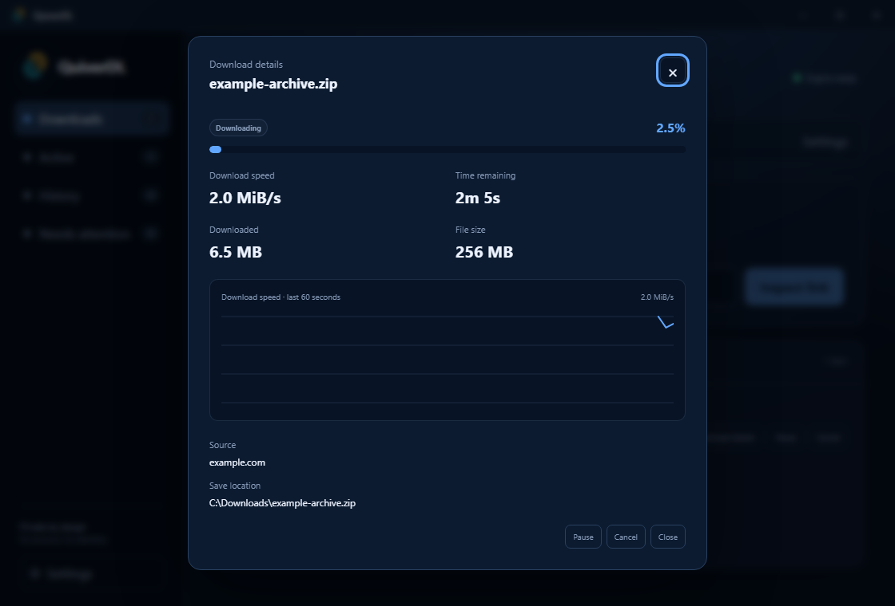

creative-assets.zipDownloading
example.com
Download speed 8.0 MiB/sTime remaining 24s
A download manager that keeps you in the know.
See the speed. Know the wait. Pick up where you left off.
Free & open source · No account needed · No telemetry
creative-assets.zip
SAVE LOCATION Downloads / creative-assets.zip
Download together, one at a time, or on your schedule.
Try the tabs. This is what being in control looks like.
01 / KEEP AN EYE ON IT
Small files or a whole afternoon's download.
Know exactly where things stand.

QuiverDL interface · example transfer dataLive transfer speed in every active download. Open the details to follow the recent speed graph.
Remaining-time estimates based on recent progress. Pauses and retries reset the measurement; unknown file sizes stay unknown.
Pause, resume, cancel, or retry. When it's done, open your file or show it in its folder.
02 / MORE THAN A FILE LINK
Direct files, media, and selected torrent files.
A familiar workflow for each.
Inspect a direct HTTP or HTTPS link, review its file details, and choose where it belongs. QuiverDL never silently overwrites a destination.
Preview available media formats and choose video quality or audio. Uses yt-dlp, with FFmpeg for merging or audio conversion.
Requires Python and yt-dlp on your device.
Preview a torrent's file list, select individual files, and choose a destination. Magnet metadata can be previewed before starting.
Direct peer connections. Review the privacy notice in the app.
03 / THE EVERYDAY GOOD STUFF
YOUR FILES. YOUR BUSINESS.
Your queue and settings stay on your device. The source is open for you to inspect, build, and improve.
Read the privacy policy04 / LET'S GET DOWNLOADING
Get a Microsoft-signed installation and Store-managed updates, or choose the portable build.
Get from Microsoft Store Windows portable v0.5.0 · .zipThe portable build is unsigned. Extract the archive to use it. Store update availability follows Microsoft certification.
A portable AppImage, or native Debian and RPM packages. Published SHA-256 checksums included.
Download AppImageUse the checksum files from the same release to verify your download.
Bring your browser along. Optional Firefox and Chromium companions send downloads to the desktop app.
Set up browser integration ↗A FEW THINGS YOU MIGHT ASK
Yes. QuiverDL is free software licensed under GPL-3.0-or-later. There are no accounts, advertising, or paid tiers in the application. You can inspect the source and build it yourself.
QuiverDL can reuse partial HTTP downloads when the server supports ranges and its size and validators still match. If a remote file changed, the app protects the partial data instead of silently appending the wrong content. Read the resume guide.
Install Python 3 and yt-dlp on your device. Install FFmpeg when merging separate video and audio streams or converting audio. You can choose your Python executable in QuiverDL settings.
No. BitTorrent uses direct tracker and peer connections, which can reveal your IP address. QuiverDL shows a privacy confirmation before starting, does not seed after completion, and rejects HTTP proxy modes that cannot cover peer traffic. No telemetry does not make peer-to-peer traffic anonymous.
Microsoft Store is recommended for a signed installation and managed updates. The GitHub portable ZIP is an unsigned build you can extract without an installer. A newly released GitHub version may reach the Store after Microsoft completes certification.
RIGHT ON TARGET.
Free software. Built in the open.